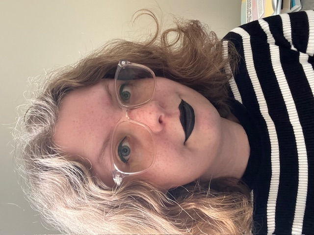

K. Thompson

K. Thompson lives in Philadelphia with their cat. They enjoy staring forlornly at their unread book pile and eating pad thai. Their work has been published in Crow & Cross Keys and Horrific Scribes.
Works in Nachtljocht

K. Thompson lives in Philadelphia with their cat. They enjoy staring forlornly at their unread book pile and eating pad thai. Their work has been published in Crow & Cross Keys and Horrific Scribes.
Works in Nachtljocht